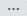

{kind=link}
{kind=link}
{kind=link}
{kind=link}
{kind=link}
{kind=link}
{kind=link}
{kind=link}
{kind=link}
{kind=link}
{kind=link}
{kind=link}
{kind=link}
{kind=link}
{kind=link}
{kind=link}

9
Examining different commit points is very easy in GitHub (easier than it is with Brackets and definitely easier than with the Git Bash command line).
Before we start with moving back to earlier commits, let’s just have a look at some features of the repository home screen that are relevant to all commit points—it will help you identify where you are:
Figure 9.33 GitHub—home page
Ok, the current commit is shown in the blue bar point 1, this is the home page so the commit number shown is the most recent commit in the whole project. The first line of the commit message and who made the commit is also shown, point 2. If you click the three dots  next to the commit message it will display the whole commit message:
Figure 9.34 GitHub—view full commit message
The button 3 is a feature of every commit point. It allows the entire project to be downloaded exactly as it was at that particular commit point.
Click to open the dropdown menu:
Figure 9.35 GitHub—clone and download
We’ve used this before, the URL in the middle is what we used to link Brackets to GitHub (§ 5.3), the bits we haven’t looked at are the two buttons at the bottom and . The first opens the project in the desktop version of GitHub, this is the same desktop application I discuss in § 9.2.2, we’re not using the application and we won’t be pushing that button.
The is very useful. If you click it, it will download a zip file of the entire project as it was at the time of the commit. This includes the full folder structure with all the files stored in their correct positions within the structure. The downloaded file is called <repository name>-master.zip; in my case lab-01-website-master.zip. If I unzip the file I get this:
Figure 9.36 GitHub—zip file contents
Now this is a very useful facility, it gives a snapshot of the entire project at any commit; and it is very easy to use.
We had a quick look at the commit history in § 8.3.2, to access it click the tab in the status bar, point 4 in Figure 9.33. It opens the commit history page (I’ve only shown part of it here):
Figure 9.37 GitHub—commit history page
Up at the top, we can see that this is the commit history for the master branch (I currently only have the master branch—if I had more branches I would be able to select them with the button and see the commit history for that branch).
Again I can see the first line of the commit message for each commit, who made it and when; clicking the three dots after commit message will show the full commit message (just like on the home page).
On the left we have three buttons:
Figure 9.38 GitHub—commit page buttons
The first button, the clipboard ( ) copies the full 40 digit commit (hash) number to the clipboard.
The second button (with the seven digit commit number in it) takes you to an information page for that commit (this is similar to the commit information page in Brackets, § 6.3.3. It looks like this:
Figure 9.39 GitHub—commit information page
The browse file button at the top does exactly the same as clicking the icon in Figure 9.38 and I cover this below in the next section.
Looking around the screen, the bit in the middle shows the changes to the file, lines 14 and 15 were added (that’s why they are in green). This is showing the file in the unified mode, see the button is pressed (just under the blue bar on the right). If you change to view, you see the version of the file at this commit alongside the version prior to this commit:
Figure 9.40 GitHub—commit information split view
The three buttons just above the file show the file in different ways: the first shows the source code, the second shows a preview and the button displays the whole file in preview mode.
GitHub allows additional commit comments to be made on any commit in the repository; these can even be attached to an individual line in the source code. Go back to the unified view of the file: and hover the mouse over the number for line 15:
Figure 9.41 GitHub—inline commit comment
It will produce a small blue plus sign, click the plus sign and it will open an inline message box, add the message shown:
Figure 9.42 GitHub—enter inline comment
Click the button and it will show in the source code file:
Figure 9.43 GitHub—inline commit comment — reply, edit and delete
A reply can be given to the message (type it in the reply area), the message itself can be edited (pencil symbol) or deleted (cross) or an emoticon can be added if you are a teenager (smiley face symbol).
|
As well as inline comments, an additional general comment for the whole commit can be added in the box at the bottom of the screen:
Figure 9.44 GitHub—general commit comment
Enter whatever message you want in the box and click the button
If a commit comment is present (either inline or general), this will be indicated when viewing the commit history, thus:
Figure 9.45 GitHub—commit comment indicator
I’ve highlighted the commit comment indicator in orange. The number indicates how many comments have been made.
Back to the commit history page (Figure 9.37). The final button that we haven’t looked at yet is the button the icon.
Click it for one of the early commits (the 2nd one, P01) in my case [25c1410]. It looks like this:
Figure 9.46 GitHub—moving to an earlier commit point
The important thing is that we are now looking at the project at an earlier commit point, this can be seen in the blue bar and in what was the branch button (highlighted), in my case commit point [25c1410]. The button is now called a button, this is the similar to the way we did a checkout in Brackets (§ 7.3).
The master branch is available on the button dropdown and selecting it will move back to the most recent commit (again just like the checkout function in Brackets § 7.3).
We can also see that there are fewer files available, the 01-intro, 02-about and 03 contact HTML files are missing.
Clicking any of the files will open it in the state it was at the time of the commit; similarly clicking will allow a zipped copy of the project at the time of the commit (complete with the correct folder structure) to be downloaded.
The zipped file will be given the name of the repository followed by the full 40 digit commit number.
In my case this is:
lab-01-website-25c1410938e16af385ac126c40f71db154f836a5.zip
It’s a bit of a mouthfull
Unzipping the file gives:
Figure 9.47 GitHub—earlier commit point zip file contents
Again the zip file contains the files and folders in exactly the state they were at the time of the commit.
This is a very convenient way of recovering data from an earlier commit point.
When we did this in Brackets with the reset we had a problem of getting back to the most recent commit. This is not a problem here, to get back to the most recent version of the project, return to the repository home page by clicking the lab-01-website name at the top (highlighted below):
Figure 9.48 GitHub—return to most recent commit point